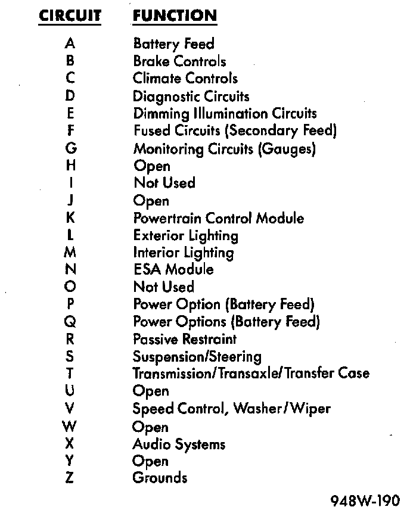

Circuit Function
Circuit Identification:

All circuits in the diagrams use an alpha/numeric code to identify the wire and its function. To identify which circuit code applies to a system, refer to the Circuit Identification Code Chart. This chart shows the main circuits only and does not show the secondary codes that may apply to some models.